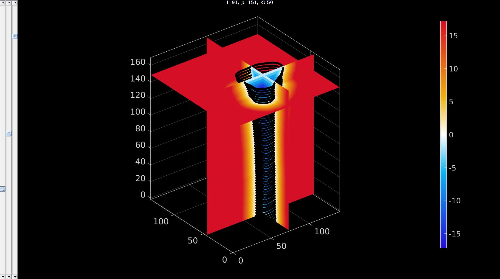
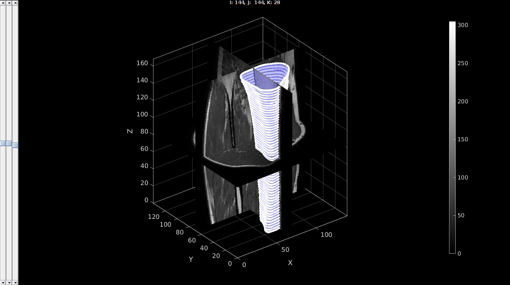
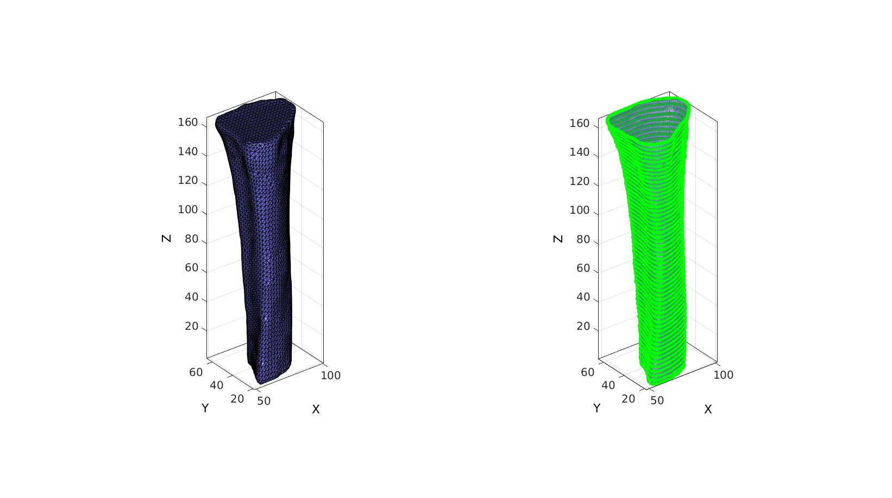

levelset2isosurface
Below is a demonstration of the features of the levelset2isosurface function
Contents
clear; close all; clc;
Syntax
[F,V]=levelset2isosurface(K,controlPar);
Description
This function computes the isosurface for an input levelset image at a desired intensity level.
The input consists of:
- A 3D levelset image K
- A structure with control parameters controlPar with the fields: contourLevel (the level for the isosurface), voxelSize (specifying the voxel size), capOpt (specifying how to cap the surface if needed), and nSub (specifying if the surface should be drawn at the native resolution nSub=[1 1 1] or if it should be courser, e.g. by skippin every 2nd voxels if nSub=[2 2 2]).
Examples
Import image data for this demo
defaultFolder = fileparts(fileparts(mfilename('fullpath'))); %Set main folder pathNameImageData=fullfile(defaultFolder,'data','DICOM','0001_human_calf'); loadNameImageData=fullfile(pathNameImageData,'IMDAT','IMDAT.mat'); IMDAT_struct=load(loadNameImageData); %The image data structure G = IMDAT_struct.G; %Geometric/spatial information v=G.v; %The voxel size M= IMDAT_struct.type_1; %The image data
contourName='imseg_calf_tibia'; pathName=fullfile(defaultFolder,'data','imseg'); %Folder name for contours
Compute levelset
loadName=fullfile(pathName,contourName); load(loadName); %Load segmentation structure Vcs=saveStruct.ContourSet; %Access the contour data [K]=contour2levelset(M,v,Vcs,2);
Visualize levelset and contours together
%Visualize levelset vizStruct.colormap=warmcold(250); %Set colormap for levelset visualization vizStruct.clim=[-abs(min(K(:))) abs(min(K(:)))]; %Set color limits [~,indMin]=min(K(:)); %assume centre of shape is at lowest value [i,j,k]=ind2sub(size(M),indMin); %Convert index to subscript indices vizStruct.sliceIndices=[i,j,k]; %Set indices as slices to plot hf2=sv3(K,v,vizStruct); %Open slice viewer for levelset %Visualize contours optionStruct.Color='k'; plotContours({Vcs},optionStruct); %Plot contours drawnow;
pointSpacing=2; controlPar.contourLevel=0; controlPar.voxelSize=v; controlPar.capOpt=1; controlPar.nSub=ceil(pointSpacing./v); [Fi,Vi]=levelset2isosurface(K,controlPar); %Smoothen numSmoothSteps=10; Eb=patchBoundary(Fi,Vi); controlPar_smooth.Method='HC'; controlPar_smooth.Alpha=0.1; controlPar_smooth.Beta=0.5; controlPar_smooth.n=numSmoothSteps; controlPar_smooth.RigidConstraints=unique(Eb(:)); [Vi]=patchSmooth(Fi,Vi,[],controlPar_smooth);
sv3(M,v); gpatch(Fi,Vi,'bw','none',0.5); optionStruct.pathName=pathName; optionStruct.Color='w'; plotContours(contourName,optionStruct); %Plot contours axisGeom; % camlight headlight; drawnow;
cFigure; subplot(1,2,1); hold on; gpatch(Fi,Vi,'bw','k',1); axisGeom; camlight headlight; subplot(1,2,2); hold on; gpatch(Fi,Vi,'bw','none',0.5); optionStruct.pathName=pathName; optionStruct.Color='g'; plotContours(contourName,optionStruct); %Plot contours axisGeom; camlight headlight; drawnow;
% % <<gibbVerySmall.gif>> % % _*GIBBON*_ % <www.gibboncode.org> % % _Kevin Mattheus Moerman_, <gibbon.toolbox@gmail.com>
GIBBON footer text
License: https://github.com/gibbonCode/GIBBON/blob/master/LICENSE
GIBBON: The Geometry and Image-based Bioengineering add-On. A toolbox for image segmentation, image-based modeling, meshing, and finite element analysis.
Copyright (C) 2019 Kevin Mattheus Moerman
This program is free software: you can redistribute it and/or modify it under the terms of the GNU General Public License as published by the Free Software Foundation, either version 3 of the License, or (at your option) any later version.
This program is distributed in the hope that it will be useful, but WITHOUT ANY WARRANTY; without even the implied warranty of MERCHANTABILITY or FITNESS FOR A PARTICULAR PURPOSE. See the GNU General Public License for more details.
You should have received a copy of the GNU General Public License along with this program. If not, see http://www.gnu.org/licenses/.